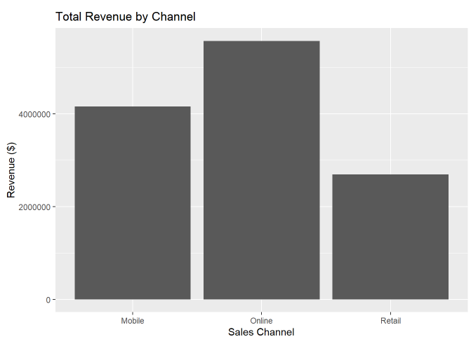
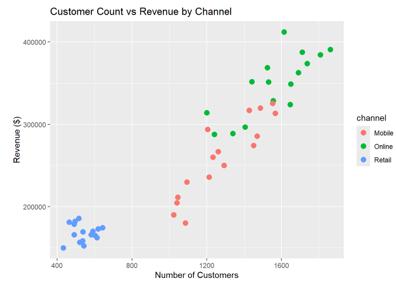
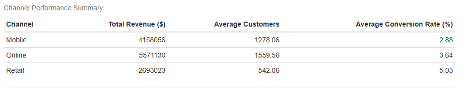
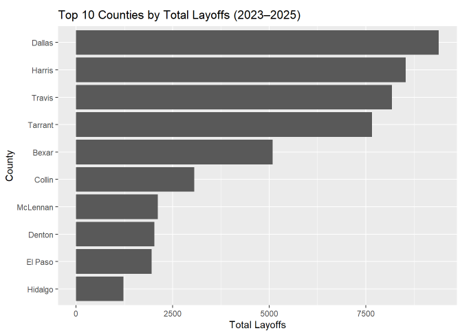
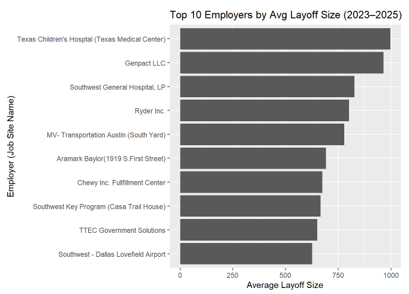
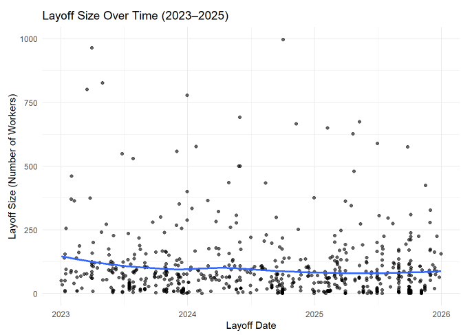

Business Finance Portfolio

This Personal Budget & Mortgage Debt Strategy project was completed as part of a case study for my FNCE 221 (Financial Planning) course. This plan involved analysis of my current financial position and a mortgage debt strategy based on an assumed future financial position.
Key Skills:



Objective: Provide a specific recommendation to help a fictional business drive more revenue based off of the provided data.
Business Recommendation: In store promotions should be created to take advantage of the retail channels high conversion rate of 5.03%, and high average revenue of $314 per customer.
Key Skills:



Objective: A fictional staffing agency is planning to expand its operations to Texas and must identify the industries and counties that have demonstrated the largest number of layoffs.
Business Recommendation: The staffing agency is recommended to expand to one of counties with the highest number of layoffs (Dallas, Harris, Travis, Tarrant). Then they should temporarily focus on the health care industry to take advantage of their large number of recent layoffs. Lastly, they should identify reasons for layoff clustering that appears in the scatter trend line.
Key Skills: